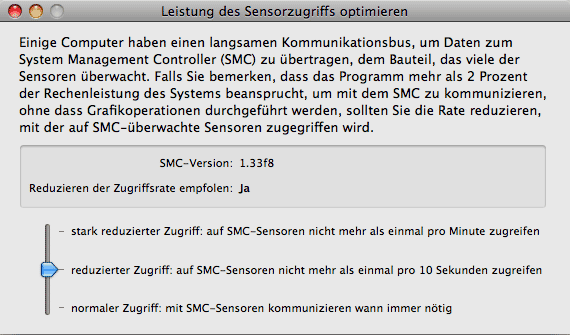
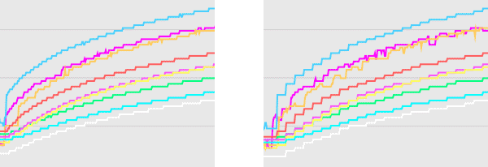

Leistung auf Intel-basierten Systemen beeinflussen |
Einige bestimmte Mac-Modelle mit Intel-Prozessoren, die nach Oktober 2008 freigegeben wurden, sind von einem technischen Problem betroffen, das Einfluss auf die Systemlast hat, die das Überwachungsprogramm aufnimmt, um seine Arbeit zu erledigen. Auf solchen Computern verbraucht das Programm möglicherweise beträchtlich mehr Rechenleistung als normal.
Sie müssen dieses Kapitel nicht lesen, falls Sie einen PowerPC-basierten Mac einsetzen oder einen Computer, der vor Oktober 2008 hergestellt wurde.
Alle Programme der Hardwaremonitor- und Temperaturmonitor-Anwendungssuite sind daraufhin optimiert, ihre Arbeit zu erledigen, ohne dabei irgendeinen anderen Prozess zu behindern. Es sollten so gut wie keine Ressourcen für die Überwachungsarbeit verbraucht werden, so dass fast die ganze Rechenleistung für Ihre normalen Standardprogramme übrigbleibt. Sie können den folgenden Test durchführen, um zu prüfen, ob das Überwachungsprogramm wie erwartet arbeitet:
Falls die gemessenen Werte jedoch beträchtlich höher liegen (der CPU-Wert liegt bei 10% oder mehr), könnte Ihr System von dem oben beschriebenen Problem betroffen sein.
Es ist normal, dass die CPU-Last, die vom Überwachungsprozess aufgenommen wird, größer wird, wenn Sie mehrere Fenster offen haben oder die Funktion Bildschirmanzeige einschalten. Das Auffrischen aller grafischen Inhalte in regelmäßigen Zeitabständen benötigt fortlaufend Rechenleistung.
Intel-basierte Apple-Computer verwenden einen spezialangefertigten Chip, den Apple System Management Controller (SMC), um die Daten der meisten Sensoren zu sammeln, um die Lüfter zu steuern und um andere Dienste auszuführen, die für das Management des Computers erforderlich sind. Der zentrale Prozessor kommuniziert mit dem SMC über eine spezielle interne Datenleitung.
Bei bestimmten Computermodellen scheint dieser Kommunikationsbus, um Daten zu oder vom SMC zu transportieren, vergleichsweise langsam zu ein, so dass die Haupt-CPU manchmal warten muss, bis die Daten am anderen Ende der Kommunikationsleitung angekommen sind. Wenn eine größere Datenmenge über den SMC-Bus übertragen werden muss, ist es sehr oft nötig, den Zugriff zu verzögern und zu koordinieren, wenn die Kommunikationsleitung belegt ist.
Programme wie Hardwaremonitor und Temperaturmonitor müssen mit dem SMC kommunizieren, um aktuelle Werte von den Sensoren des Systems zu erhalten, d.h. sie müssen den SMC-Bus sehr intensiv nutzen. Auf gewissen Systemen zwingt Mac OS X die Überwachungsprogramme dazu, einen ungewöhnlich hohen Betrag an Prozessorleistung für die aktive Koordinierung des Zugriffs auf den SMC-Bus aufzuwenden. Dies bewirkt, dass die betroffenen Programme viel mehr aktive CPU-Zeit für die SMC-Kommunikation verbrauchen. Beachten Sie, dass solch ein Programm den SMC nicht über seinen eigenen Code ansprechen kann. Es muss dazu Dienste und Treiber von Mac OS X verwenden. Die Rechenzeit wird durch indirekt aufgerufene Codeteile innerhalb des Mac OS X-Systemkerns verbraucht, nicht durch den Code des Überwachungsprogramms selbst.
Es ist momentan unbekannt, ob dieser Effekt durch einen allgemeinen Konstruktionsfehler in der Bus-Hardware bestimmter Chipsätze verursacht wird oder durch unausgereifte Treiber in gegenwärtigen Versionen von Mac OS X.
Um das Problem zu vermeiden, dass das Überwachungsprogramm einen ungewöhnlichen hohen Betrag der Prozessorleistung dazu benötigt, Daten von SMC-gesteuerten Sensoren zu empfangen, kann das Programm konfiguriert werden, seine SMC-Kommunikation einzuschränken. Bitte beachten Sie, dass nicht alle Sensoren vom SMC betrieben werden.
Um zu prüfen, ob ein bestimmter Sensor über den SMC gesteuert wird, öffnen Sie das Fenster Sensorübersicht im Programm und doppelklicken Sie auf die Tabellenzeile des zur Diskussion stehenden Sensors. Falls die Zeile Hardware im Detailinformationsfenster des Sensors das Ergebnis Apple Systemmanagementsteuereinheit zeigt, benötigt dieser Sensor SMC-Kommunikation.

Wenn Sie den Zugriff auf den System Management Controller optimieren möchten, führen Sie bitte folgende Schritte durch:
In der Einstellung normal greift das Programm auf SMC-Sensoren immer dann zu, wenn es nötig ist. In der Einstellung reduzierter Zugriff stellt das Programm sicher, mehr als einen Zugriff auf jeden SMC-gesteuerten Sensor innerhalb eines Zeitintervalls von 10 Sekunden zu vermeiden. Bei stark reduziertem Zugriff, wird garantiert, dass Zugriffe auf jeden SMC-Sensor nicht öfter als einmal pro Minute erfolgen.
Beim Reduzieren der Zugriffsrate wird die Zeitauflösung für Messungen, die mit SMC-Sensoren durchgeführt werden, nicht mehr so genau sein, wie vorher. Die Werte, die im Sensorverlauf aufgezeichnet werden, scheinen innerhalb des Zugriffszeitintervalls konstant zu bleiben. Wenn Sie eine Verlaufsgrafik anzeigen, werden die Kurven in vertikaler Richtung nicht mehr glatt, sondern "stufiger" sein. Sensoren, die nicht vom SMC gesteuert werden, sind von der Zugriffsrateneinstellung nicht betroffen.

Links: normale Zugriffsrate * Rechts: reduzierte Zugriffsrate